Comparing Forced Alignment Methods
There are several tools and methods for force-aligning speech recordings, and each works well or badly depending on different factors. It can be difficult to know which method to use.
You can compare different forced alignment methods with your own data by configuring LaBB-CAT to allow multiple simultaneous alignments which can then be compared, in order to decide which method to use.
To do this, the broad process is:
- set up multiple forced alignment configurations, configured to output their word and phone alignments to separate layers (i.e. not the normal word and segment layers), and then
- Run each forced alignment configuration on some subset of the data, so that the separate word and phone alignment layers are populated with aligned intervals.
- Finally, you can compare the configurations, either by:
- selecting individual utterances, extracting all the alignments to a TextGrid with the audio, and doing an auditory/visual evaluation of each set of alignments, or
- manually aligning a selection of utterances, and automatically comparing each set of automatic alignments with the corresponding manual alignments.
Once you have decided on a winner, you then delete the losing configurations, and reconfigure the winning one to output its alignments to LaBB-CAT’s word and segment layers, and run forced alignment again, on all the data.
Setting up multiple forced alignment configurations
Normally, LaBB-CAT only allows one set of word/phone alignments at a time, and these are stored in the word and segment layers. In order to compare alignments, you need to be able to have multiple word/phone alignments in LaBB-CAT at the same time, so you can compare them side-by-side in order to choose the best one.
In order to set this up, you need to set up the forced aligment configurations to output their alignments to different layers, instead of the word and segment layers which are the default. The steps to achieve this are as follows:
- Decide which forced alignment configurations you want to compare. They may all involve the same layer manager module (e.g. if you want to compare HTK’s train/align procedure with its built-in P2FA pretrained acoustic models), or they may involve different layer manager modules (e.g. if you want to compare MFA’s pretrained models with the WebMAUS ones).
(In these instructions, we show a comparison of HTK’s P2FA models with MFA’s pretrained US English models.) - Ensure that the layer manager modules you need are installed in LaBB-CAT - i.e. install the HTK and the HTK Manager, or MFA and the MFA Manage, etc.
- In LaBB-CAT, select the phrase layers menu option.
You will see a list of phrase layers, which may include language and entity. - The column headings at the top are also a form to fill in in order to add a new phrase layer. Fill it in with the following details:
- Layer ID: a descriptive name of the configuration, e.g. WebMAUS or HTK-P2FA
- Type: Text (this layer will end up containing the word tokens)
- Alignment: Intervals (i.e. annotations with a start time and an end time)
- Manager: select the layer manager for this forced alignment configuration, e.g. HTK Manager
- Generate: Never (we will be running forced alignment manually on a selection of recordings, and we don’t want these forced alignments being automatically triggered when new transcripts are uploaded)
- Project: this can be left as-is, unless you have already created a ‘project’ to categorise these layers under.
- Description: A descriptive note something like “Word alignments produced by HTK using the Penn Forced Aligner pretrained acoustic models (P2FA)” 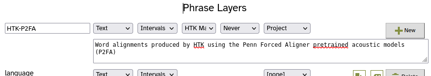
- Press the New button.
The layer’s configuration form will appear. - Fill in the configuration form as required for this configuration, e.g. if it’s HTK with P2FA models, tick the Use P2FA models checkbox, etc.
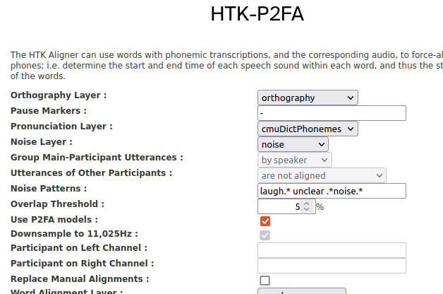
The configuration form will also allow you to configure which layer the word alignments and phone alignments are saved to, with a setting like Word Alignment Layer set to word by default, and Phone Alignment Layer set to segment by default. - Change the Word Alignment Layer to be the layer itself (i.e. if the layer you just added is called “HTK-P2FA”, select the HTK-P2FA option in the dropdown list next to Word Alignment Layer).
- Change the Phone Alignment Layer by selecting the [add new layer] option.
You will be asked what you want the new layer to be called.
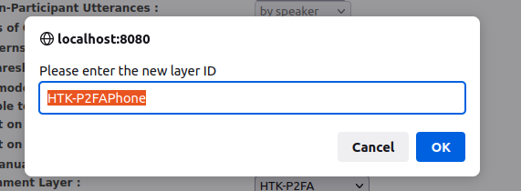 - You can leave this as the default value, which will be something like “HTK-P2FAPhone”, and press OK
- There may also be an Utterance Tag Layer setting, which by default has the layer itself selected. We’re already using the layer itself for the word alignments, and don’t want it to also contain a time-stamp for when the alignment was done, so we are going to un-set this setting.
Set Utterance Tag Layer to [none].
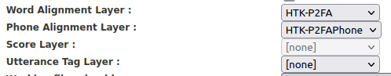 - Press the Set Parameters button to save the configuration.
- Repeat steps 3-11 for each configuration you want to compare.
For this example, we have added an MFA Manager layer… 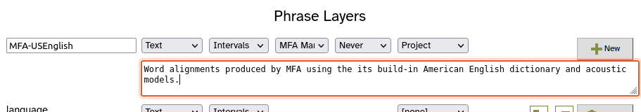. …using the english_us_arpa dictionary/models.
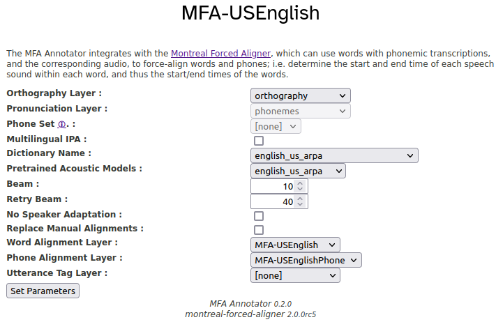 - Select the phrase layers option from the menu.
You will see that, in addition to the layers you added for the word alignments, the corresponding phone alignment layers have also been automatically created.
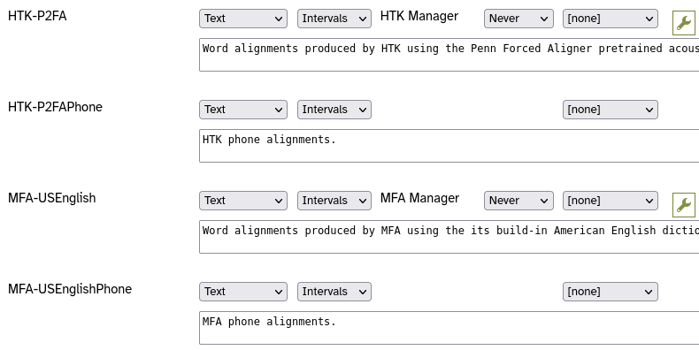
Now you have multiple forced alignment methods set up, and none of them is configured to output their alignments on the word and segment layers. Instead, each method outputs its alignments to different ‘phrase’ layers.
The configurations are set, but there are no alignments to compare yet.
Running multiple independent forced alignments
Once you have set up all the configurations you need, you can run each forced alignment configuration on a subset of utterances. In order to compare side by side, you should force-align the same utterance for all configurations.
- Decide what subset of utterances to align.
- If you are comparing configurations that all use pre-trained acoustic models, the subset can be as small as a handful of utterances from different speakers, or even single utterance, as the amount of data included in the forced alignment run won’t effect the quality of the alignments.
- If you are comparing configurations that first train acoustic models and then force-align utterances based on those models (i.e. the ‘train/align’ method), you will need to have a larger subset, which might be all the utterances of one or more speakers, or even the whole corpus. How big the subset needs to be depends on the configuration (e.g. for train/align with HTK, you’ll need at least 5 minutes of speech, and for traing/align with MFA, you may need as much as 3-5 hours of speech)
- In LaBB-CAT, collect together your subset of utterances on a ‘matches’ page.
e.g. if it is to be all the utterances of a selected speaker or speakers:- go to participants page,
- find the desired participants,
- tick them
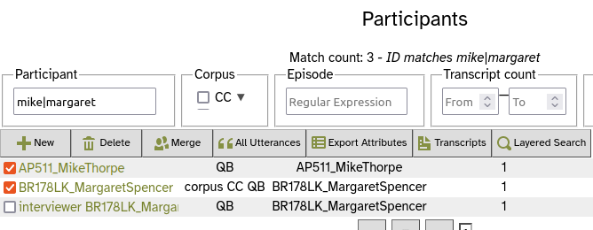 - press the All Utterances button, and
- press List.
However you determine your subset of utterances, you need to end up at a ‘matches’ page like this:
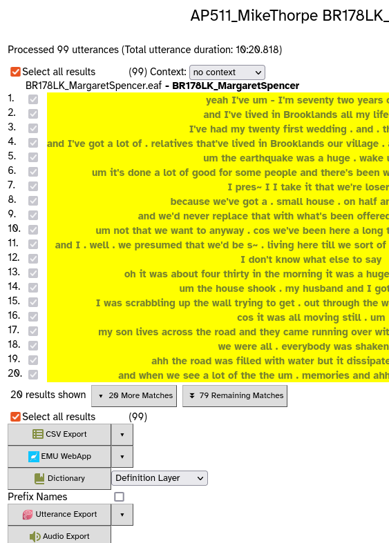
All utterances will be ticked by default, but you can manually select utterances from the list by un-ticking Select all results and then ticking individual utterances to align. - At the bottom, there will be a button for each of the forced alignment configuration layers you added earlier.
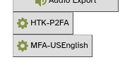 - Press the first button.
This will start the forced alignment process for that configuration, including only the selected utterances. This may involve filling in missing pronunciations, and then you will see a progress bar while the utterances are being aligned.
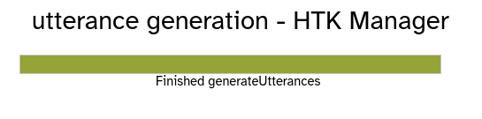 - Once the forced alignment for this configuration is complete, repeat steps 2 and 3 above for each of the other forced alignment configurations.
Once you’ve completed the last forced alignment, you will have multiple sets of alignments simultaneously saved in different layers in LaBB-CAT, ready for comparison.
Auditory/visual comparison of the alignments
The easiest way to directly compare the different sets of alignments is by extracting utterances to TextGrids, and opening them with corresponding audio in Praat. This can be done directly from the transcript page, using LaBB-CAT’s Praat Integration.
- In LaBB-CAT, select the transcripts option on the menu.
- Find one of the transcripts that includes utterances in the subset you force-aligned above, and click its name to open the transcript page.
- At the top of the transcript there is a list of layers, which should now include options for the forced alignment layers you added earlier, and their corresponding phone alignment layers.
- Tick all of the forced-alignment layers.
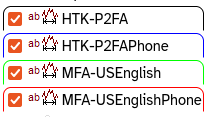
This will cause the aligned annotations for these layers to be displayed on the transcript page, for the utterances that have been forced-aligned.
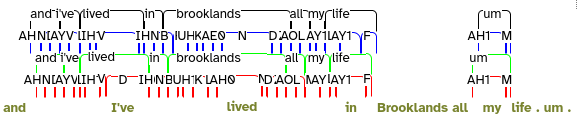
The transcript page is not intended to accurately represent time alignment at this granularity, so the display will look cramped and confusing. The word and phone annotations on each layer will probably not line up with the corresponding transcript words below. - Click any word in the utterance (i.e. from the olive-coloured words), and select Open TextGrid in Praat from the resulting menu.
This will open Praat and show the utterance TextGrid with the corresponding audio. The TextGrid will include:
- a tier named after each forced-alignment configuration layer, containing the word alignments from that configuration
- a tier named after each configuration’s Phone Alignment Layer, containing the phone alignments from that configuration
- a word tier at the bottom, containing the main word alignments - most likely these will be evenly spaced out during the duration of the turn, and will not line up with the words in the audio; this is because the main word tokens haven’t been aligned yet, and won’t be until you select the winning configuration and change it to output it’s word alignments to the word layer (and phone alignments to the segment layer)
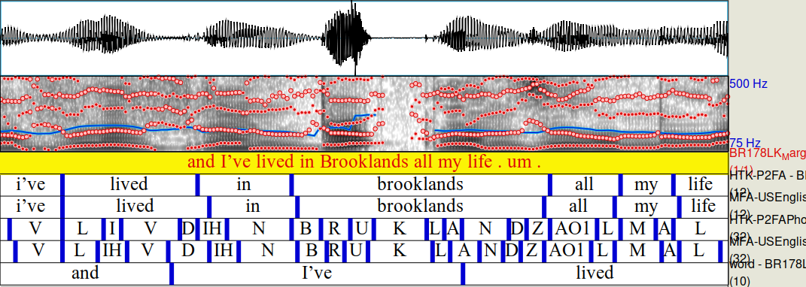
In Praat, you can compare the phone/word alignments of each configuration, by selecting intervals, examining how they line up with the spectrogram above, and playing the corresponding audio to get an impression of how well aligned the segment is with the audio.
This type of evaluation is impressionistic, but after comparing a number of utterances across a number of speakers this way, it may become clear which configuration has more accurate alignments.